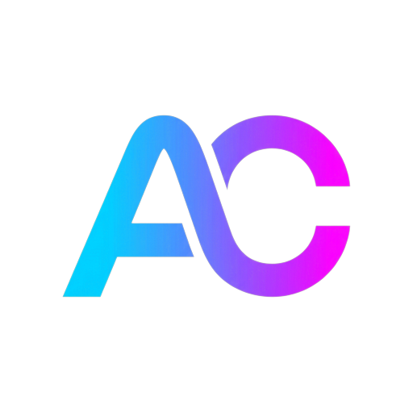

AllThatConverter
Free online tools published on the web.
Portfolio
About
Confirmed profile material shows ongoing work in Samsung Electronics since 2011, with hands-on development experience around Samsung Wallet Android features as well as security and payment-related work.
Personal interests include table tennis and computer programming.
Born in 1985, male, email: spoon-fed-programmer@gmail.com.
Experience
2011 - Present
Samsung Wallet Android app development.
Security and payment-related responsibilities.
Projects

Free online tools published on the web.
Contact
Direct public contact email: spoon-fed-programmer@gmail.com.
Project links, repository history, and this email address are the current public contact footprint.
Games
Score0
Best0
StatusReady
Score0
Best0
StatusReady